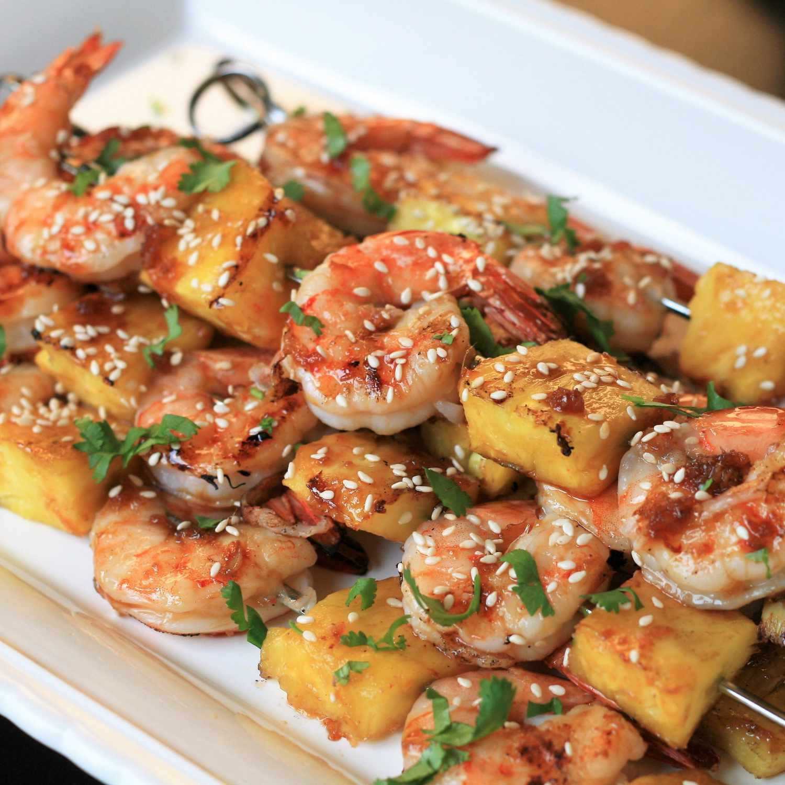

Grilled Teriyaki Shrimp and Pineapple

These savory-sweet shrimp skewers are east to make and cook in just
a few minutes. They are perfect for summer weeknights or weekend
dinner parties. Prep the sauce ahjead of time for an even faster dinner.
I prefer to use jumbo shrimp (21 to 25 per pound>, however use what
you have on hand.